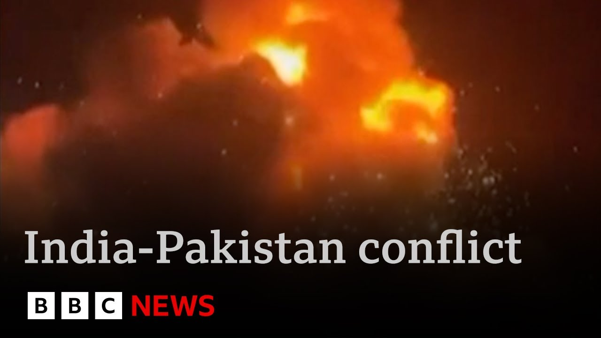

来B站一起耍【Global每日英语简报】
【巴基斯坦指责印度“点燃地狱之火”，加剧对更广泛冲突的担忧 | BBC新闻】
Summary: Pakistan's prime minister accuses India of igniting an inferno with missile strikes, killing 31 people, while India claims it targeted terrorist infrastructure. Pakistan vows retaliation after shelling across the line of control, as tensions escalate in Kashmir.
摘要： 巴基斯坦总理指责印度通过导弹袭击“点燃地狱之火”，造成31人死亡，而印度称其目标是恐怖分子基础设施。巴基斯坦在控制线炮击后誓言报复，克什米尔紧张局势升级。

⏱️ Estimated Reading Time: 7 min
Pakistan's prime minister has accused India of igniting an inferno with the missiles it launched at his country overnight.
巴基斯坦总理指责印度夜间向其国家发射导弹，“点燃了地狱之火”。
Shabbash Sharif said India had made a grave mistake for which it will now have to pay the price.
夏巴兹·谢里夫表示，印度犯了一个严重错误，现在必须为此付出代价。
At least 31 people were killed in the overnight attacks.
夜间袭击造成至少31人死亡。
India says it was targeting what it calls terrorist infrastructure in nine different locations.
印度称其目标是九处不同地点的所谓“恐怖分子基础设施”。
The Indian strikes were followed by heavy Pakistani shelling across the line of control which India says killed between 10 and people.
印度空袭后，巴基斯坦在控制线展开猛烈炮击，印度称造成10多人死亡。
The smoldering remains of a home.
房屋仍在闷烧。
Shell casings from last night's gunfire mixed with broken bits of people's lives.
昨夜炮击的弹壳与人们破碎的生活碎片混杂在一起。
Villages like Salamabad along the line of control in Indian administered Kashmir pounded overnight into the morning as India and Pakistan exchanged artillery fire reporting dozens of casualties on both sides.
印度控制的克什米尔控制线附近的萨拉马巴德等村庄从夜间到清晨遭到炮击，印巴双方交火，报告数十人伤亡。
Many of the injured residents from Salamabad were brought to this nearby hospital.
许多来自萨拉马巴德的受伤居民被送往附近这家医院。
One of the burned down homes we saw earlier belonged to Bad Nik and his family.
我们早些时候看到的一处被烧毁的房屋属于巴德·尼克和他的家人。
Me and my children had barely enough time to run after two Pakistani shells landed in the middle of our home.
我和孩子们勉强有时间逃跑，就在两枚巴基斯坦炮弹落在我们家中间之后。
You've seen our loss.
你已经看到了我们的损失。
We have nothing left.
我们一无所有了。
India under pressure domestically to respond to last month's attack when gunmen opened fire on tourists in Indian administered Kashmir.
印度国内面临压力，要求对上月在印控克什米尔枪手袭击游客事件作出回应。
26 people died.
26人死亡。
The deadliest attack on civilians in recent years.
这是近年来对平民最致命的袭击。
India blaming militants operating in Pakistan.
印度指责在巴基斯坦活动的武装分子。
An allegation Pakistan denies.
巴基斯坦否认这一指控。
India exercised its right to respond and preempt as well as deter more such crossber attacks.
印度行使了回应、先发制人以及阻止更多此类跨境袭击的权利。
These actions were measured, non-escalatory, proportionate and responsible.
这些行动是克制的、非升级的、相称且负责任的。
And this was the response.
这就是回应。
India says it targeted and destroyed nine militant training camps operating in Pakistan administered Kashmir and beyond.
印度称其瞄准并摧毁了巴控克什米尔及以外的九个武装分子训练营。
Pakistan says dozens of civilians were killed in those attacks.
巴基斯坦称这些袭击造成数十名平民死亡。
Calling the military action an act of war.
称此次军事行动为战争行为。
It is vowing retaliation.
誓言报复。
Pakistan reserves the right and will respond to this aggression at a time, place and means of our own choice.
巴基斯坦保留权利，将在自己选择的时间、地点和方式回应这一侵略。
As border towns and villages like Salamabad lay abandoned, people in the region are left hoping that this brings recent tensions to an end and not merely the beginning of a longer and more protracted conflict.
随着萨拉马巴德等边境城镇和村庄被遗弃，该地区的人们希望这能结束最近的紧张局势，而不仅仅是更长期、更持久冲突的开始。
Samir Hussein, BBC News, New Delhi.
萨米尔·侯赛因，BBC新闻，新德里。
The Prime Minister, Sakir Stal said the rising tensions over Kashmir will be of serious concern to all communities in Britain.
首相萨基尔·斯塔尔表示，克什米尔紧张局势升级将引起英国所有社区的严重关切。
Like others, he is encouraging dialogue and deescalation.
和其他人一样，他鼓励对话和降级。
Our diplomatic correspondent James Landell is with me.
我们的外交记者詹姆斯·兰德尔和我在一起。
Donald Trump has also weighed in tonight.
唐纳德·特朗普今晚也发表了看法。
There's always a risk, James, in these circumstances that a response leads to an escalation neither side can stop.
詹姆斯，在这种情况下，总是存在回应导致双方都无法阻止的升级的风险。
Yeah, and that's the question everybody's asking tonight is how does Pakistan respond and what response does it provoke from the Indians?
是的，这就是今晚每个人都在问的问题：巴基斯坦如何回应，以及这会引发印度什么样的反应？
Uh the question of course is whether they can control what's called this escalatory ladder.
呃，问题当然是他们能否控制所谓的“升级阶梯”。
Both sides seem to think they can.
双方似乎都认为他们可以。
They both seem to be saying, "Well, we're being measured. We're being non-escalatory."
双方似乎都在说，“嗯，我们是克制的。我们是非升级的。”
The risk though is one that the the foreign secretary, David Lammy, and others have pointed out today, which is one of miscalculation because if that happens, there is a risk this spirals out of control, and then you end up with a regional conflict, maybe a proxy conflict with allies piling in on both sides, or even worse.
然而，外交大臣戴维·拉米等人今天指出的风险是误判，因为如果发生这种情况，局势可能失控，最终导致地区冲突，甚至是盟友卷入双方的代理人冲突，或者更糟。
Remember, we are talking about two countries that possess nuclear weapons at odds over one of those militarized regions in the world.
记住，我们谈论的是两个拥有核武器的国家，在世界上军事化程度最高的地区之一发生争执。
And there are two other factors making this harder.
还有两个因素使情况更加困难。
One is you've got two walls already in the Middle East and Ukraine that that is distracting the international community.
一是中东和乌克兰已经有两场冲突分散了国际社会的注意力。
Most leaders today have been saying well you know they're playing for restraint and not much more.
今天大多数领导人都在说，你知道，他们呼吁克制，仅此而已。
And secondly you've got the United States seemingly unwilling to engage diplomatically.
其次，美国似乎不愿意进行外交接触。
Normally they've played a mediating restraining role in this conflict.
通常他们在这场冲突中扮演调解和克制的角色。
As you said um President Trump tonight said me and I quote, "If there's anything I can do to help, I'll be there."
正如你所说，呃，特朗普总统今晚说，我引用原话，“如果我能做些什么来帮助，我会在那里。”
It's not exactly proactive diplomacy.
这并不完全是积极主动的外交。
So you've got a distracted international community.
所以，国际社会分心。
You've got a lack of US leadership.
美国缺乏领导力。
You've got rising nationalist rhetoric from both sides.
双方民族主义言论升级。
So, it's clearly a very, very serious situation and the stakes are high.
所以，这显然是一个非常非常严重的局势，风险很高。
James, thank
詹姆斯，谢谢